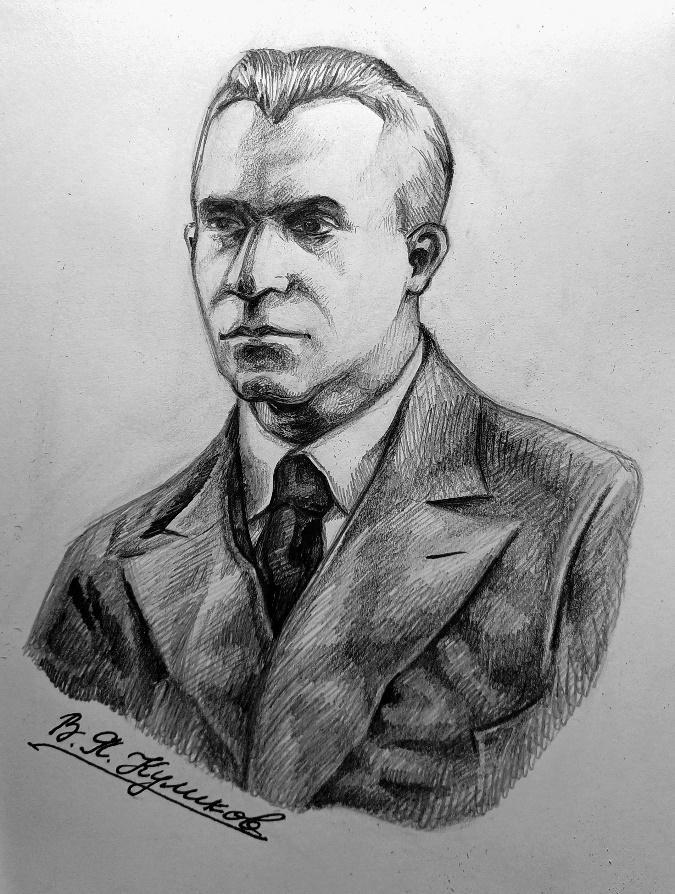
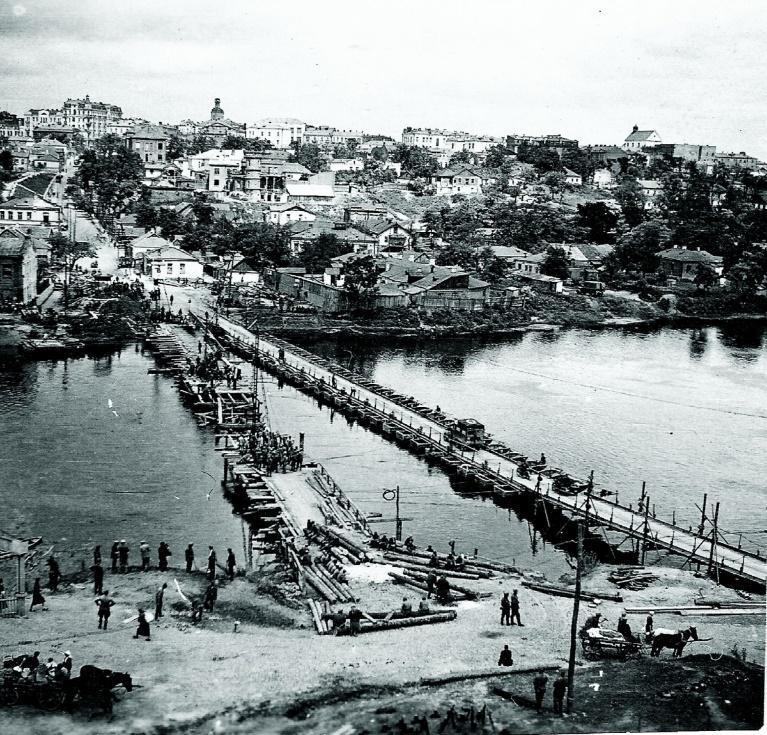
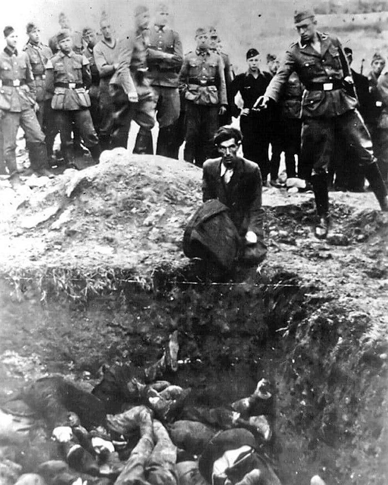

Історична карта 1945 року
Перейти до карти
«Я ПИШУ ВАМ ТЕ, ЩО БАЧИВ НА ВЛАСНІ ОЧІ, ЧУВ СВОЇМИ ВУХАМИ, РОЗУМІВ СВОЇМ РОЗУМОМ». ВНЕСОК ВАСИЛЯ КУЛИКОВА В МЕМОРІАЛЬНУ СПАДЩИНУ ВІННИЧЧИНИ.

Історія України схожа на зоряне небо. Кожна із зірок – це людина, яка зробила значний внесок у становлення та розвиток народу та країни, не зважаючи на темряву, що постійно намагається загасити це сяйво. Підіймаючи очі догори, ми не часто звертаємо увагу на окрему зорю, але не можемо заперечувати, що кожна із них є необхідним джерелом спільного потоку світла, яке не дає нам заблукати темної ночі і загубити свою стежку в житті. Тому хотілося б привернути увагу до людини, ім’я якої гідне одного із небесних світил. Людину, що розповіла нам про страшний період в історії Вінниччини - німецьку окупацію часів Другої світової – через призму не лише фактів та статистики, а й через біль особистих переживань, і гірку пам’ять людей, що були очевидцями тих подій. А саме, мова піде про видатного вінницького лікаря, громадського діяча, військового та мемуариста - Куликова Василя Яковича.
"Хто був очевидцем цих подій, той ніколи не забуде ні тих невинних, ні тих злодіїв, що виконували наказ біснуватого Гітлера, ні того страшного часу. Пам'яті тих великих мучеників і присвячена ця повість".
НАЩАДОК КОЗАЦЬКОГО РОДУ
Про витоки роду Куликових ми знаємо зі свідчень старожилів та архівних записів села Червоний Кут Саратівської області, де проживали винятково етнічні українці. В другій половині XVI століття, після національно-визвольного руху, багато українських сімей були змушені емігрувати на схід. Серед таких опинився і козак Кулик, котрий згодом був зареєстрований на новому місці як «Куликов». Тут його нащадки осіли, відновили побутову культуру та почали займатись землеробством, аж поки не застали революцію 1917-го.
Яків Семенович – батько Василя, - все життя проживши в Росії, не знав жодного слова російською, розмовляв лише українською. Тут, в одному з осередків української діаспори, і починається становлення Куликових як великої лікарської династії, з моменту, коли Василь Якович отримав диплом лікаря у 1918-му та пішов добровольцем у Першу світову як військовий лікар. Він воював у складі Першої кінної армії Будьонова, служив у Закавказзі. Потім закінчив Військово-медичну академію у Ленінграді. У 1926-1930 роках керував військовим шпиталем у Вінниці та мав звання генерал-майора медичної служби. При цьому, як говорять його діти та онуки, «інколи не був комуністом» - досить цікавим є спогад про таємне вінчання із його принциповою майбутньою дружиною, наперекір догмам і заборонам радянської ідеології; а також його значна відвертість в особистих записах, яка не догоджала ні німецьким, ні радянським чинам.
У 1930-му він пішов у відставку з військової служби. Тепер ніщо не відволікало від справи життя – неораного поля медицини. У роки Другої світової війни Василь Якович був єдиним у Вінниці лікарем-отоларингологом (ЛОР), проте це був не єдиний його профіль. З огляду на належність до професійних кіл, доводилося спілкуватися з представниками Тимчасової адміністрації вінничан, а також окупаційної влади гітлерівців. На той час знання однієї іноземної мови було рідкісним явищем навіть серед спеціалістів. А Василь у свої роки вже мав високий рівень англійської, німецької, французької, грецької та латині. Це дозволяло йому отримувати вдосталь інформації з різних джерел. За словами онука – Євгенія Педаченка – будучи на пенсії, дід читав в оригіналі Юлія Цезаря. Тож це говорить нам про Василя Яковича як про людину інтелігентну та напрочуд обізнану. Його щоденники стали неоціненним та ледь не єдиним джерелом інформації про величезний пласт історичних подій, що відбувались на Вінниччині в період німецької окупації. Ось лише невеликі фрагменти із книги, які дозволяють нам побачити Вінницю 40-х років очима очевидця.
ЗАХОПЛЕННЯ ВІННИЦІ
Як часто це буває, можновладці, коли «запахне смаженим», швидко покидають «нагріті місця» та забуваючи про народ. «Радянські намісники» у 1940-х не стали виключенням. «Чекісти одними з перших евакуювали свої сім’ї – 2 липня 1941-го, у вагонах «зі всіма зручностями. 5 липня евакуювали сім’ї співробітників санчастини і декого з «непридатних». Щоправда, не в «люксі», а у товарному вагоні.»
Куликов дізнався про евакуацію пізніше за всіх, тому «не встиг навіть в останній вагон 10 липня». 15 липня його викликали до прокурора прикордонних військ НКВС і голови «ревтрибуналу». Запитали, чому не евакуювався. «Вони мовчки вирішували мою долю. Я міг не повернутися додому. Попросили евакуаційне посвідчення – і розірвали його на шматки. «Йдіть на службу! Ви будете потрібні Вінниці».
Вже 18 липня Старе місто, а 19-го – все Замостя захопили німецькі десантники. Довелось підірвати всі три мости, котрі зв’язували два береги Бугу. Проте вже 20-го вся Вінниця опинилась в руках нацистів. Не зважаючи на чисельні політичні маніпуляції «і чорних, і червоних», Василь стверджує, що «коли німці заходили в місто, їх ніхто не зустрічав із букетами, символічного «ключа» не вручали».
Наступні три дні Вінниця жила без влади, водопостачання, хліба. Місцеві маргінали-мародери грабували магазини, склади, аптеки, проникали по ночах у будинки… Було чути крики по допомогу, на які німці ніяк не реагували. Вони охороняли виключно своє майно.

Встановлення німцями тимчасової переправи поблизу Староміського мосту в 1941 році.
Щоправда, порозвішували плакати «Хто грабує – буде розстріляний!». Але це нікого не зупиняло, бо ж грабували не німецьке «добро». Відкривались магазини з написом «Тільки для німців», облаштували шпиталь для своїх поранених.
Окупанти «мислили більш масштабно» - вивозили з міста і сіл продовольство, сировину, худобу, обладнання і верстати. З-за «бугра» налетіла орда «підприємців», які почали привласнювати собі заводи, місцеві помістя, ліси, будинки. В районах ті взяли у свої руки сільське господарство. Місцеві жителі залишалися безправні, обібрані до нитки, як кріпаки під «пильним наглядом рушниць». Діяла комендантська година.
Весь цей безлад діяв, допоки 23 липня професору Севастьянову не вдалося сформувати «Тимчасове управління містом Вінниця». Проте не обійшлось без суперечок, хто з трьох претендентів має керувати містом. «Севастьянов був Гулівером серед інших ліліпутів» - пише Куликов. Нова управа розмістилася у міській раді. Відтепер за грабіж передбачався розстріл, тому крики про допомогу по ночах припинилися – ставки для злодіїв стали надто високі. Було взято під охорону підприємства, організації, лікарні і т.д. З’явився знову хліб, світло, вода, почали працювати деякі фабрики й заводи.
ПОЧАТОК САМОУПРАВСТВА ОКУПАНТІВ
В 1941-му окупанти вже зайняли найкращі будівлі: облкому, облвиконкому, інститутів, технікумів, редакцій, НКВС, але й далі продовжували виселяти людей зі своїх квартир, щоб забрати їх на потреби якоїсь «надто важливої установи». Мова йшла про 5 будинків і 300 кімнат. Вулиці Толстого, Пирогова, Малиновського, Гоголя, Гойхера, Р.Люксембург і Комунальний провулок – всі 17 січня 1942 року були перейменовані на Фрідріхштрасе, Францштрасе та ін. Вірогідно, зроблено це було на догоду фюреру та його високим чинам, котрі згодом оселились тут. Цей район вінничани стали називати «німецька слобода».
У березні до міста прибували одна за одною вантажівки з військовими-німцями. Зв’язківці оселилися у гуртожитку медінституту та почали обладнувати там зв’язковий пункт. 15 липня окупанти вже зустрічали представників ставки Гітлера: німці вручали їм квіти та аплодували. Це ж робили і колабораціоністи. Фюрер поселився у секретному об’єкті в Стрижавському лісі під назвою «вовче лігво». На початку жовтня вони покинули ставку, а в березні 44-го підірвали її та деякі будинки у місті, котрі слугували штабом їх високопосадовців. «Стався розкол серед «щирих українців» — тих, хто приїхав до Вінниці з німцями переважно із західних областей і вимагав допомагати тим у боротьбі проти СРСР, і вінницьким націоналістам, які першочерговими вважали саме українські справи та українізацію. Останні, звісно, не сподобались німцям.»
ПРО БОРОТЬБУ ГОРБАЦЕВИЧА. ПОРТРЕТИ ШЕВЧЕНКА ТА ГІТЛЕРА.
Як розповідає Василь Якович, заступник голови міста Григорій Горбацевич радів німцям, адже при Сталіні його заслали в Сибір. Тому Григорій справедливо вбачав в них можливість звільнення України від радянського гніту, як їх колись сприймали за часів Скоропадського. Після закінчення строку, він повернувся в Україну, досяг успіхів в медицині, очолив кафедру патологічної анатомії. «Був чесною людиною, гарним науковцем. Він вірив, що Україна за німців стане самостійною, але Гітлера не прославляв.» Коли заввідділу освіти Серафимович почепив у театрі портрет Гітлера, Горбацевич поруч встановив портрет Шевченка та тризуб – щоб в «угарі успіхів», німці не забувались, на чиїй вони землі, і що Україна не буде їх придатком. Обидва портрети висіли майже аж до приїзду Гітлера.
«Горбацевич мріяв тільки про самостійну Україну. Казав, що навіть уві сні бачить її такою. Вірив, що німці дадуть можливість створити незалежну державу. Проте ті на це лише усміхалися - окупанти бачили Україну своєю колонією». Якось Григорій запитав доктора Куликова, чи відомо тому, що полковник Богун не визнавав рішення Переяславської ради… Горбацевич говорив, що Радянська Україна це колонія Росії: «через 50 років радянської влади в Україні не залишиться жодного українця — всі стануть росіянами. Розмовляють всі на російській, підручники на російській. Є лише територія, яку називають Україною і 40 млн українців, а все інше, як за царату, — російське».
За 10 днів до приїзду фюрера, Горбацевича звільнили з посади заступника голови управи та прибрали портрет Шевченка із тризубом, лишили Гітлера. Григорія це дуже образило. А 14 квітня 1943 його забрало гестапо за надто бурхливу проукраїнську поведінку.
Горбацевич і Куликов були сусідами, і той бачив, що заступник голови міста ніколи не користувався своїм службовим становищем - сім’я жила бідно. Якби не допомога сусідів, його родина померла б із голоду. Випустили з тюрми Горбацевича 30 жовтня 1943-го та влаштували лікарем у колонії. Під час звільнення Вінниці його однодумці — Дорошенко, Лук'яненко, Чорноморець, пішли з окупантами, а Горбацевич залишився. «Він нікому не причинив зла під час окупації і не підтримував жодних нацистських звірств.» Після останніх, Григорій розчарувався в своїх поглядах на німців як союзників і корив себе за «сліпоту». «Окремі його роботи мали світове значення. Після визволення міста його заарештувала радянська влада, як і професора Гана, який не втік з німцями.»
У ВІННИЦІ СТОЯВ 100-ДЕЦИБЕЛЬНИЙ ШУМ
В ніч з 27 на 28 грудня 1943 Тимчасове управління Вінницею припинило своє існування. До міста наближалися радянські танки. Вінницю залишив її німецький «хазяїн». Проте це виявилось лише перегрупуванням - нацисти знову з’явилися. Маршем через Вінницю пройшли підрозділи танкової армії Хубе. «Новенькі німецькі «Пантери» й «Тигри», самохідні установки «Фердинанд» гриміли на всю міську округу. Вінничани мовчки дивилися на залізну силу ворога. Такої техніки і у такій кількості вони ще не бачили у своєму житті.»
6 січня 1944-го до Вінниці знову повернулися штадткомісар, секретар нацистської партії Нольдінг та «команда». Мангерфельд зустрів професора Гана, запитав, чому той не виїхав - «Не встиг». Гану доручили створити нову міську управу. 19 січня у Вінниці з’явилося нове «Тимчасове управління». Перед тим, 12 січня німці спалили спиртовий завод , 13 — театр, 16 — одне крило психлікарні, 17 — кондитерську фабрику. Частіше тепер заявляли про себе партизани: підривали склади, вбивали окупантів.
УМЕРТВІННЯ ДУШЕВНОХВОРИХ ТА ХОЛОКОСТ
В кінці жовтня 1941 року пройшла чутка, що німецькі окупанти змушують головного лікаря Вінницької облпсихлікарні Антона Лук'яненка умертвити всіх душевно хворих людей в лікарні. Спочатку в це майже ніхто не повірив. Куликов теж знав, що не всі німці були живодерами. Доктор Зепп – лікар гарнізону, з яким найчастіше зустрічався Василь, - «був німцем, який досить адекватно ставився до місцевих». Але чутка ставала все більш моторошною.
«1 листопада ми з одним із лікарів психлікарні – Миколою Павловичем, повертались з роботи. Він був сам не свій - часто спотикався, протирав окуляри, мовчав. Я поцікавився, що трапилось, чим так засмучений. Він відповів: "Я сходжу з глузду, і я не один такий. Лук'яненко отримав наказ умертвити 1200 душевнохворих. Імовірно, він вже примирився із цим. Всі в розпачі та вважають, що за невиконання наказу, фашисти розстріляють всіх лікарів, особливо головуючих. Я сьогодні - пів години тому, - пішов з посади консультанта-терапевта. Я не можу брати в цьому участь".»
Але це було не єдиним проявом наростаючих нацистських звірств. «Під час окупації, кожної п’ятниці гітлерівці тепер влаштовували розстріли. Події були неймовірно жорстокі... Взяти нічого не зрозумівших людей, вивезти з домівок, поза місто і там, роздягнувши, розстріляти ні за що, без суду. І не одного-двох, а тисячі! І зробити це по задуму одного безумця. Хто дав йому таке право? … Вбивали тих, кого протягом тижня доставляли у тюрму-гетто на Єрусалимці, — партизанів, комуністів, їхніх помічників, хто чинив опір окупантам, а також євреїв, циганів… Затриманих вивозили з тюрми за місто, десь у район Луки-Мелешківської і там виконували вирок».
«Євреям було найскладніше. Їм не давали можливості заробити хоча б на харчування, виганяли з помешкань, змушували носити нашивки на одязі із зіркою Давида, аби легше було упізнавати і кривдити.» 28 липня 1941 року в Вінниці були розстріляні перші 146 євреїв. 1 серпня наступило із вбивством 25 євреїв-інтелігентів, а 13-го серпня було розстріляно ще 350. 5-го і 13-го вересня в ході підготовки до «остаточного вирішення єврейського питання» на території Вінниці було вбито 1000 і 2200 євреїв відповідно.
В своїх спогадах Куликов детально описує два ще більш масові розстріли. За його інформацією із джерел міської управи, «під час першого вироку від 19 вересня 1941 року знищили 16 тисяч вінницьких євреїв (дехто називає число в 28 тисяч). 16 квітня 1942 року розстріляли 9 тисяч». В рукописі є епізод про те, як під вересня 41-го вдалося врятувати дівчинку на ім’я Поля. Вона надала свідчення побаченого на місці розправи. На превеликий жаль, пізніше нацисти спіймали її вдруге і та вже не змогла врятуватись.
У 1942 році, зважаючи на закінчення будівництва ставки Гітлера, голова бригади СС М. Томас розпорядився, «щоб перед приїздом фюрера останні євреї зникли як з Вінниці, так і з самої України». Станом на 1 січня 1943-го, за переписом населення було виявлено 5 тис. євреїв, котрих звезли до Вінниці з інших регіонів. Багато вмирали від голоду й хвороб, знищувалися і євреї-військовополонені.
16 квітня були розстріляні майже всі євреї, а 25 серпня було вбито залишених раніше в живих 150 євреїв-фахівців, що будували ставку. Вінниця була оголошена «вільною від євреїв». В архівних документах можна знайти фото одного із цих жахливих днів, котрі нацисти задокументували для власної хворобливої звітності. На звороті був напис від руки «Останній єврей Вінниці» (нім. Der letzte Jude von Winniza), по якій світлина і отримала свою назву.

На сторінках свого щоденника Куликов висловлює відчай та здивування з приводу того, що світ не засудив масові розстріли євреїв. «Мовчали Рузвельт, Черчилль…» На його думку, масові розстріли євреїв, які сталися у Польщі, Білорусі, Україні, можна було зупинити. «Треба було заявити, що відповідальність за злочин нестиме не лише Гітлер, а вона буде покладена на весь німецький народ, який підтримує такі дії свого вождя».
ПАМ’ЯТЬ, ЯКУ НАМ ЗБЕРІГ КУЛИКОВ
Протягом усього життя Василь Якович вів щоденник, незважаючи на те, що така звичка була небезпечною та могла коштувати життя за один крамольний вираз (насправді, не те щоб щось сильно змінилось). З цієї причини частину матеріалів довелося знищити, аби не піддавати ризику не тільки себе, а й сім’ю, друзів, тих, хто пам’ятав і говорив про «Великий терор» 37-мого. У записах була приписка: «Опублікувати не раніше XXI століття».
Рукопис Василя Куликова, після тривалого надійного зберігання його родиною, був виданий книгою «Окупація Вінниці (18.07.1941-20.03.1944). Спогади очевидця». Власні переживання та роздуми Василя Яковича, емоційні діалоги та душевні метання інших відомих і видатних вінничан, а також напівтаємні свідчення, зібрані автором на свій страх і ризик. У книзі 383 сторінки, які нині вінничанам слід прочитати ще раз. Однак, у бібліотеці ім. Отамановського (колишня Тімірязєва) зберігається лише один примірник із невеликого накладу в 500 одиниць. Це має підштовхнути громаду на роздуми про необхідність її перевидання. Адже ця пам’ять заслуговує бути збереженою та переданою далі.
Як страшно читати про розкопки могил вінничан, розстріляних у 1937 році сталінськими катами з НКВС, вбивство душевно хворих у психлікарні, вивезення на роботи «остарбайтерів» у Німеччину, про обшуки у домівках, де могли переховуватись євреї; так і сьогодні неможливо без сліз, злості та розпачу дивитись на постійно зростаючі списки жертв російських ракетних обстрілів, безвісти зниклих солдат та цивільних, розповідей про тортури та розстріли на окупованих територіях, повідомлень про створення все нових живих коридорів для полеглих українських захисників. Без перебільшень, сьогоднішні події значною мірою перегукуються із часом, про який розповідається в книзі. В ній багато прізвищ, в т.ч. і жертв нацистських розстрілів. А світлина страти «останнього єврея Вінниці» змушує серце стиснутись ще більше, після подібної ж розправи над Мацієвським Олександром, якого майже два роки тому, 30 грудня 2022-го, розстріляли путінські війська біля м. Соледар, Донецької області. І він не єдиний, кого спіткала така страшна доля.
Все, що ми відчуваємо зараз, колись пережила сім’я Куликових. Записані уривки розмов доктора із німцями сприймаються як моторошний триллер-детектив, але насправді мова про гірку правду будь-якої війни, яку ми змушені відчути знову. Навряд чи ще можна знайти в архівах стільки спогадів про ті 32 місяці перебування гітлерівців в серці Поділля.
В 2021 році мемуари знову «проявили себе». 13 жовтня у Вінниці відбулася прем'єра військово-історичної драми «Відлуння» режисера В. Шалиги, в основу якої лягла вже згадана книга Куликова. У стрічці знялися відомі актори та місцеві жителі. Міський голова Сергій Моргунов, який підтримував створення фільму, назвав його «важливим внеском у збереження історичної пам’яті».
Блискучий лікар, чудово освічена і ерудована людина, Василь Якович Куликов був вдумливим і небайдужим спостерігачем та документалістом своєї надзвичайно складної епохи. Його життя та праця залишили нам не лише безцінне джерело для дослідження історії Вінниці, а й започаткували цілу династію видатних українських лікарів, які «воліють заповнити білі плями в медицині, як того колись так хотів сам Василь Якович». Одна зірка запалила десяток інших. Так збережімо ж це сяйво в своїх серцях, і зростимо його в душах наших нащадків.
Автор: Теплов Д.Д.
Цікаві місця

Всі права захищені.